layout: true <style> .ozadje { background-image: url('kovanci_ozadje.avif'); background-size: cover; background-position: center; background-repeat: no-repeat; } </style> --- class: ozadje, center, middle # Lov za zakladom --- class: ozadje # Uvod Sredi neobljudenega otoka Peter sledi zemljevidu, ki naj bi vodil do skritega in dolgo iskanega zaklada. Po dolgi in nevarni poti končno pride do konca poti. Najde jamo, označeno na zemljevidu in previdno vstopi. Ima dobro in slabo novico... <div style="text-align: center;"> 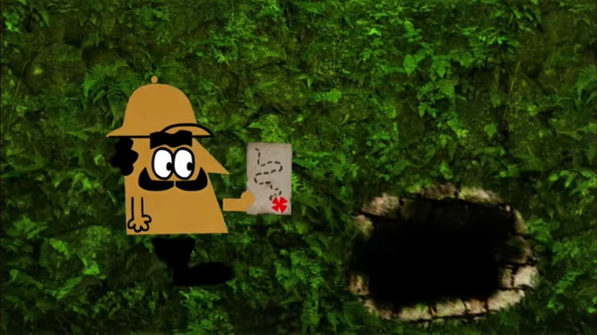 </div> --- class: ozadje # Uvod Dobra novica je, da pred seboj zagleda ogromen kup kovancev, poleg katerega sedi čarovnica. Zelo prijazno se ta strinja, da je lahko ves zaklad povsem njegov. <div style="text-align: center;"> 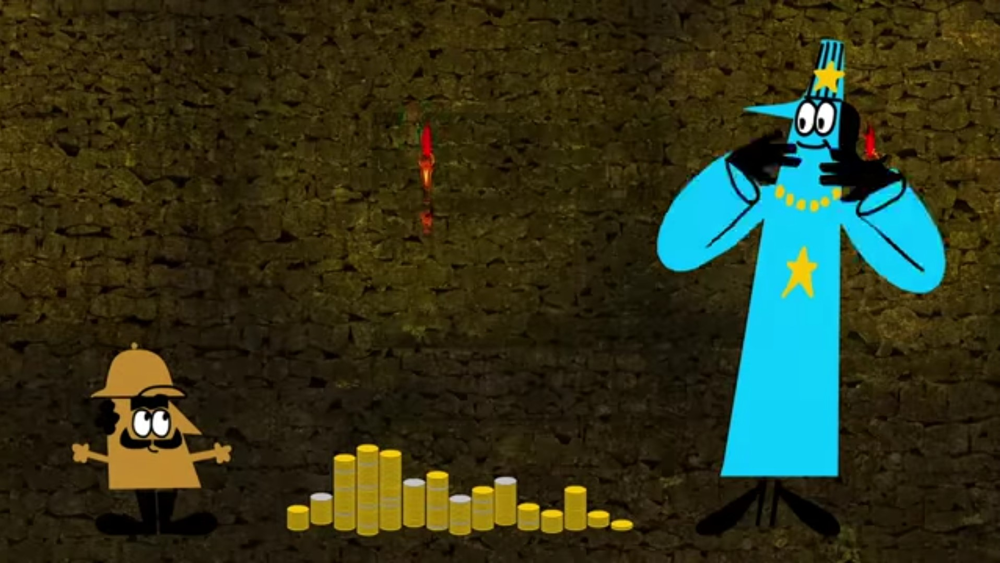 </div> -- Slaba novica pa je, da čarovnica v tem trenutku zapre vhod v jamo in Petru ne dovoli oditi, dokler ne reši njene uganke. Naloga ne zveni pretežka, zato izziv sprejme. --- class: ozadje # Problem Vsi kovanci so na eni strani srebrne, na drugi pa zlate barve. Na obeh straneh je vrezljana strašljiva škorpijonova podoba tako, da je zgolj z dotikom kovanca strani nemogoče ločiti. <div style="text-align: center;"> 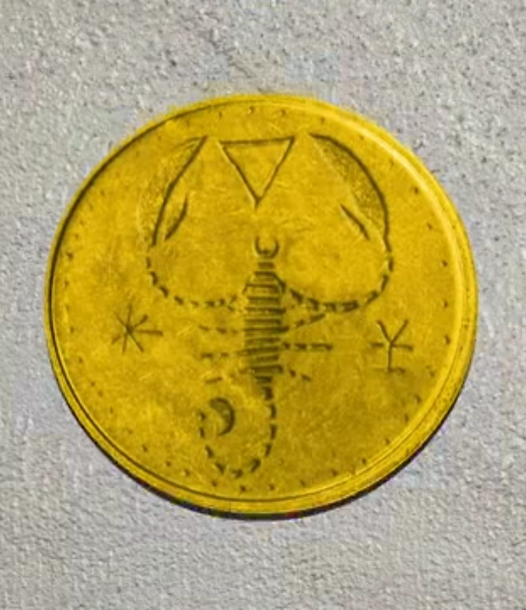 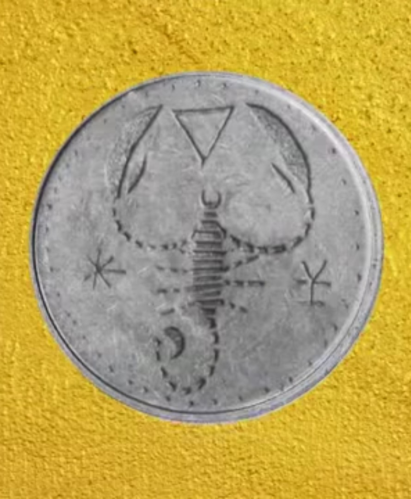 </div> --- class: ozadje # Problem Vse kar je potrebno storiti je, da Peter kovance loči na dva kupa tako, da bo na obeh enako število kovancev s srebrno stranjo obrnjenih navzgor. <div style="text-align: center;"> 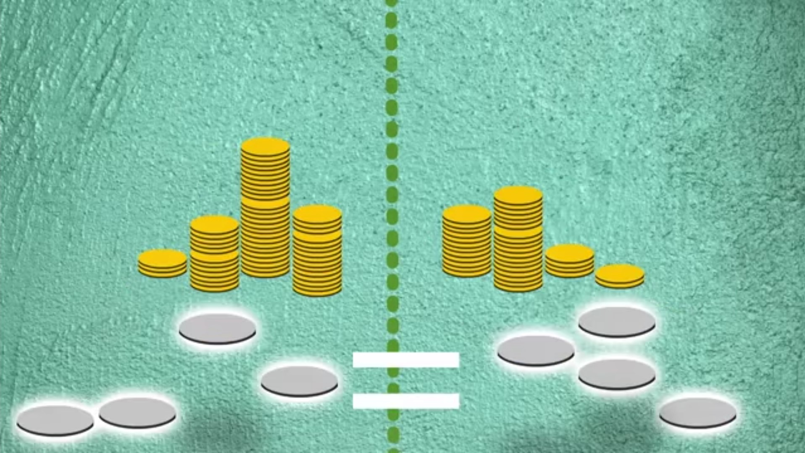 </div> -- Ravno se namerava lotiti dela, ko se kar na enkrat v jami ugasnejo vse bakle. Peter se znajde v popolni temi. Pred seboj ima na tisoče kovancev, ki so na obeh staneh na dotik enaki. -- Poskuša se spomniti, kje na kupu kovancev so kovanci s srebrno stranjo obrnjeni navzgor, a je to povsem brezupno. Zagotovo ve le nekaj. Ko je bilo še svetlo je preštel natanko 20 kovancev, ki so s srebrno stranjo obrnjeni navzgor. --- class: ozadje, center, middle, **Kako naj Peter reši uganko, ki mu jo je zastavila čarovnica in se reši iz ujetništva, s sabo pa odnese kup neprecenljivih kovancev?** --- class: ozadje # Ideja Kup kovancev je potrebno razdeliti na dva, ne nujno enako velika kupa. Na obeh mora biti enako število kovancev, s srebrno stranjo obrnjenih navzgor. <div style="text-align: center;"> 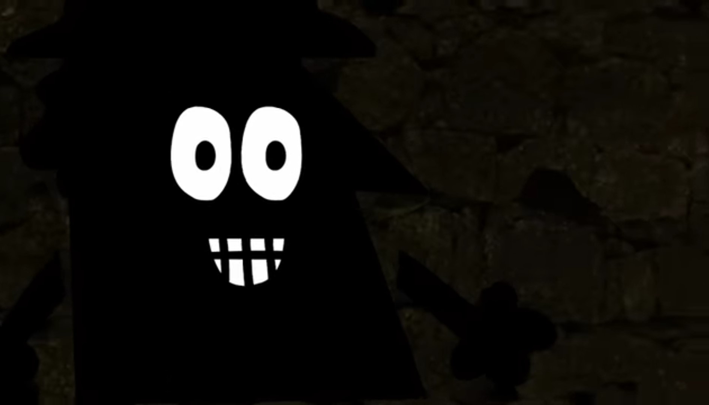 </div> -- Če obrnemo kovanec, ki je na prvotnem kupu s srebrno stranjo obrnjen navzgor, bo po tem navzgor obrnjena zlata stran. Obratno, če obrnemo kovanec, z navzgor obrnjeno zlato stranjo po tem dobimo navzgor obrnjeno srebrno stran. --- class: ozadje # Rešitev Previdno prestavimo naključno izbranih 20 kovancev. Ti predstavljajo drugi kup. Nato vseh teh 20 kovancev obrnemo in dobimo dva kupa kovancev, na katerih je enako število takih, ki so navzgor obrnjeni s srebrno stranjo. <div style="text-align: center;"> 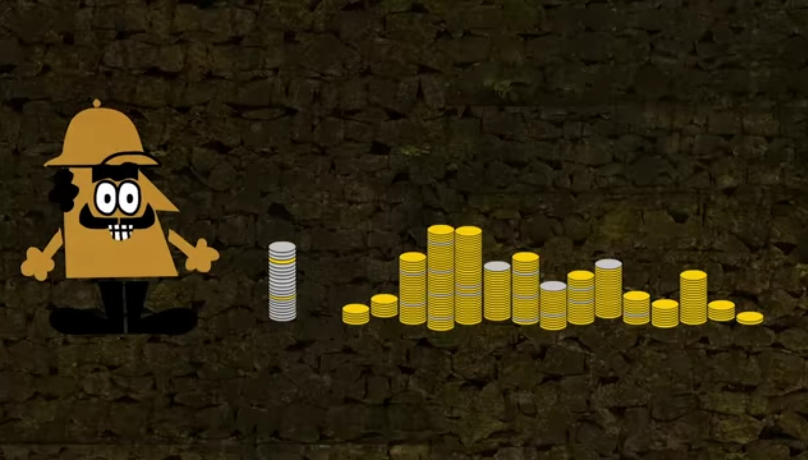 </div> --- class: ozadje # Zakaj to deluje? Rešitev je resnično enostavna. Zakaj deluje? -- Vseeno je, koliko kovancev imamo na začetnem kupu. Pomembno je le, da jih je natanko 20 s srebrno stranjo obrnjenih navzgor. Ko v temi premaknemo 20 kovancev, ni mogoče zagotovo vedeti koliko izmed njih jih je obrnjenih navzgor s srebrno stranjo. <div style="text-align: center;"> 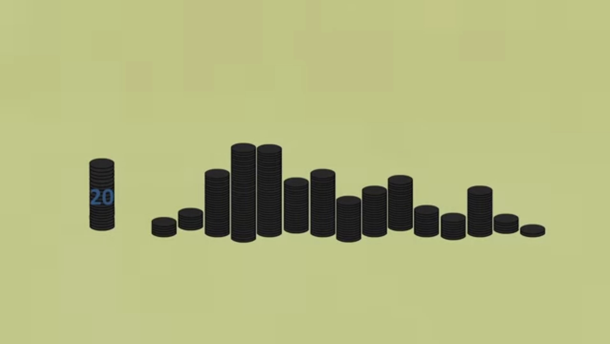 </div> --- class: ozadje # Zakaj to deluje? Recimo, da smo kovance izbrali tako, da je na novem kupu 7 kovancev obrnjenih navzgor s srebrno stranjo. Ostalih 13 je navzgor obrnjenih z zlato stranjo. Na prvotnem kupu pa je tako ostalo še 13 kovancev, s srebro stranjo obrnjenih navzgor. <div style="text-align: center;"> 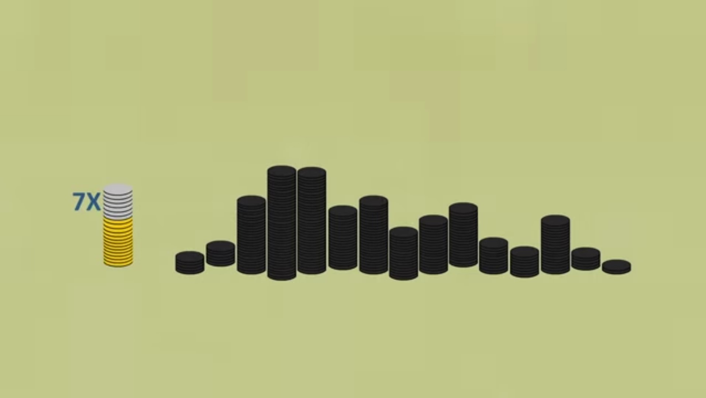 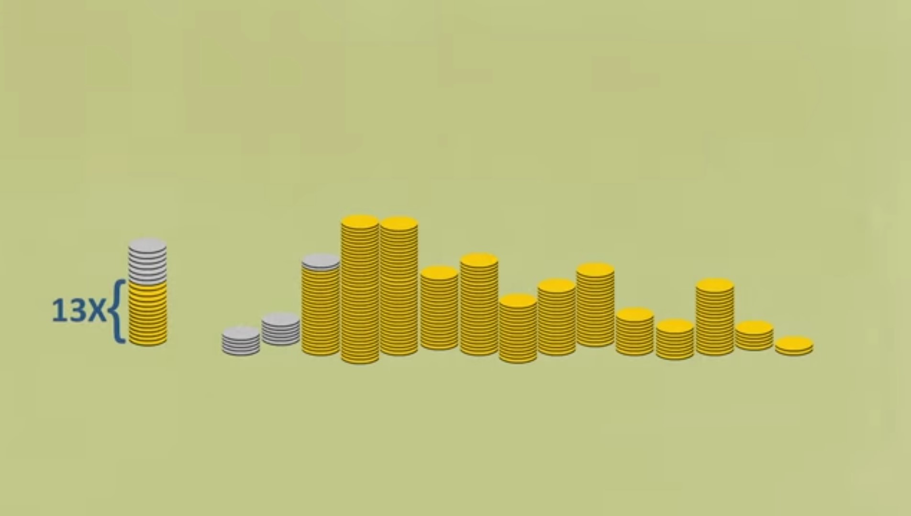 </div> <div style="text-align: center;"> 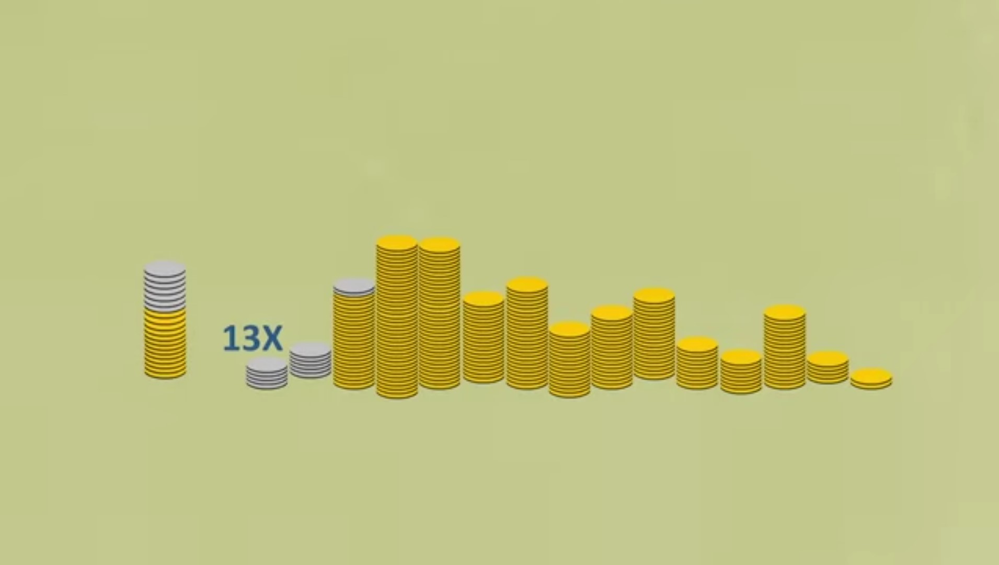 </div> --- class: ozadje # Zakaj to deluje? Ko vse kovance na novem kupu obrnemo se torej zgodi naslednje: - 7 srebrnih kovancev postane zlatih in - 13 zlatih kovancev postane srebrnih. Število kovancev s srebrno stranjo obrnjenih navzgor se torej ujema s številom takih na prvem kupu. <div style="text-align: center;"> 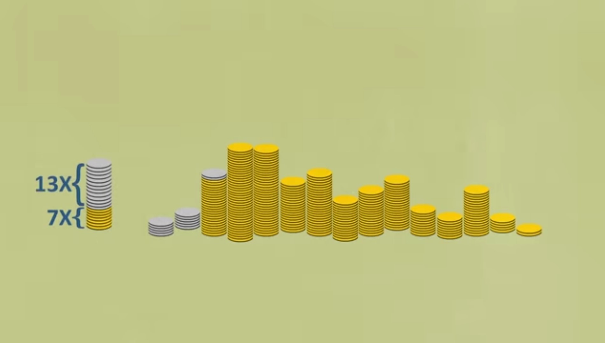 </div> -- Izkaže se, da takšen sistem deluje ne glede na to, koliko kovancev, s srebrno stranjo obrnjenih navzgor izberemo v prvotnem kupu. Lahko jih izberemo le nekaj, lahko izberemo same srebrne, lahko pa tudi nobenega. --- class: ozadje # Zakaj to deluje ne glede na izbiro kovancev? Za vsak kovanec imamo natanko dve možnosti. Lahko je navzgor obrnjen s srebrmo ali pa z zlato stranjo. Ne glede na izbiro je vsota srebrnih in zlatih kovancev na drugem kupu enaka 20. -- Število srebrnih kovancev, ki ostanejo na prvem kupu bo vedno enako $20 - \text{število srebrnih kovancev, ki smo jih prestavili na drugi kup}$: $S_1 = 20 - N$ -- Ker nov kup vedno vsebuje 20 kovancev, je število zlatih kovancev na njem enako $20 - \text{število srebrnih kovancev, ki smo jih prestavili na drugi kup}$: $Z_2 = 20 - N$ -- Ko vse kovance na drugem kupu obrnemo, vsi zlati kovanci postanejo srebrni: $Z_2 = S_2$ -- Število srebrnih kovancev je torej enako na obeh kupih : $S_1 = S_2 = 20 - N$ --- class: ozadje # Zaklad rešen! Vhod v jamo se odpre in Peter skupaj z zakladom pohiti iz nje preden si čarovnica premisli. <div style="text-align: center;"> 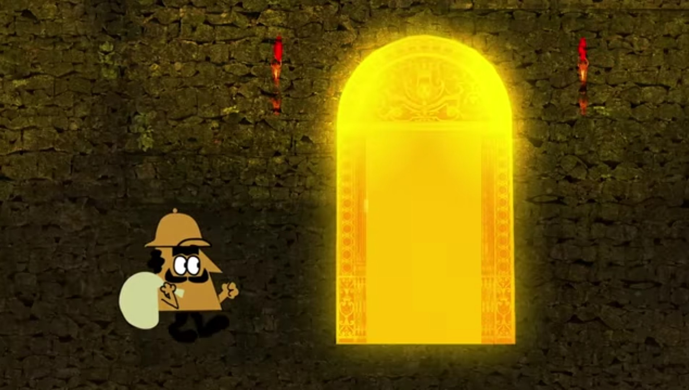 </div>